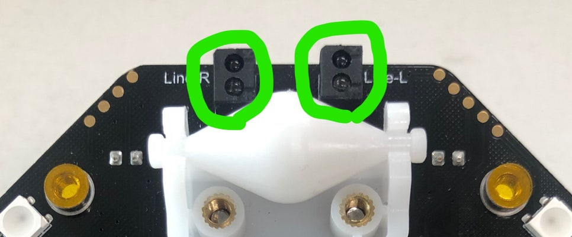

9. 라인트레이서 (마퀸)
바닥의 검은 선을 밑면 적외선 센서 2개로 찾아가며 스스로 달리는 로봇입니다. 공장의 운반 로봇, 식당 서빙 로봇의 기본 원리예요. 왼쪽·오른쪽 센서 값의 조합으로 4가지 상황을 판단하고, 상황별 동작을 함수로 나누어 두는 것이 핵심입니다. 판단은 무한반복에서, 동작은 함수에서!
먼저 볼까요? 검은 선을 따라 달리는 마퀸
적외선 센서: 흰 바닥은 1, 검은 선은 0

센서 하나에 눈이 두 개입니다. 발광부가 눈에 안 보이는 적외선을 바닥으로 쏘고, 수광부가 튕겨 온 빛을 받습니다.
- 흰 바닥: 빛이 반사되어 돌아옴 → 값 1
- 검은 선: 빛을 흡수해 못 받음 → 값 0
- 그래서 값이 0이면 "지금 검은 선 위!", 1이면 "흰 바닥 위!"
센서 값 조합으로 4가지 상황 판단하기
| 왼쪽 센서 (P13) | 오른쪽 센서 (P14) | 마퀸의 상황 | 해야 할 동작 | 함수 이름 |
|---|---|---|---|---|
| 0 (검정) | 0 (검정) | 선 위에 잘 있음 | 직진 + 헤드라이트 둘 다 켜기 | 라인위 |
| 1 (흰색) | 0 (검정) | 왼쪽으로 벗어남 | 우회전 (왼쪽 바퀴만 돌리기) | 왼쪽이탈 |
| 0 (검정) | 1 (흰색) | 오른쪽으로 벗어남 | 좌회전 (오른쪽 바퀴만 돌리기) | 오른쪽이탈 |
| 1 (흰색) | 1 (흰색) | 선을 완전히 놓침 | 천천히 돌며 선 찾기 + 라이트 끄기 | 경로이탈 |
"P13의 디지털 입력 값 = 0 그리고 P14의 디지털 입력 값 = 0"처럼 그리고로 묶으면 두 조건이 모두 참일 때만 실행됩니다.
핀 배치
| P13 | 왼쪽 적외선 센서 (디지털 입력) |
|---|---|
| P14 | 오른쪽 적외선 센서 (디지털 입력) |
| P8 / P12 | 앞쪽 헤드라이트 LED 왼쪽 / 오른쪽 (디지털 출력 1 = 켜기) |
| P15 | 밑면 RGB LED 4개 (경광등) |
준비물 (모둠당)
- micro:bit + 마퀸 본체, AA 건전지 3개, USB 케이블
- 검은색 라인 트랙: 흰 전지 + 검정 절연 테이프(폭 약 2cm)
- 확장: DFRobot_MaqueenPlus_v20 (추가 방법은 7번 페이지 참고)
블록 코드
함수 4개와 무한반복이 나란히 있어 넓습니다. 크게 보기를 누르거나 블록을 끌어 옮겨 보세요. MakeCode에서 열기를 누르면 확장이 추가된 상태로 편집기에 열리니, 그대로 다운로드해 마퀸에 넣을 수 있어요.
코드 주소: https://makecode.microbit.org/S90141-07627-52311-47871
만드는 순서
- 함수 4개 만들기 고급 → 함수 → 함수 만들기로 라인위 · 왼쪽이탈 · 오른쪽이탈 · 경로이탈을 만듭니다. 안은 아래 "함수 안에 넣을 것"대로 채워요.
- 무한반복에서 판단하기 만약 ~ 이면 / 아니면을 넣고, 아니면 안에 만약 3개를 더 넣습니다 ((+) 버튼). 조건은 위 표의 순서대로 P13 = 0 그리고 P14 = 0 → 함수호출 라인위 … 경로이탈까지.
- 경광등 (선택) 무한반복 맨 위의 RGB LED P15 0~3번 빨강·파랑 4개는 7번에서 배운 경광등입니다. 없어도 라인트레이서는 똑같이 달립니다.
- 트랙 만들고 달리기 흰 전지에 검정 절연 테이프로 둥근 코스를 붙입니다. 급한 커브는 피하고, 마퀸을 선 위에 올려 출발!
블록 찾는 곳 — 고급 → 핀 → "P0의 디지털 입력 값"을 P13 / P14로 바꾸기, "디지털 값 출력" | 논리 → 그리고, 비교(=) | 고급 → 함수 → 함수 만들기, 함수호출 | MaqueenPlusV2&V3 → 모터 블록
함수 안에 넣을 것
| 라인위 | 모든 모터 전진 20 · P8, P12에 1 출력 (라이트 둘 다 켬) |
|---|---|
| 왼쪽이탈 | 왼쪽 20, 오른쪽 0 (우회전) · P8 0, P12 1 |
| 오른쪽이탈 | 왼쪽 0, 오른쪽 20 (좌회전) · P8 1, P12 0 |
| 경로이탈 | 왼쪽 16, 오른쪽 20 (크게 돌며 선 찾기) · P8 0, P12 0 |
헤드라이트는 "지금 어느 함수가 실행 중인지" 보여 주는 표시등입니다. 도는 쪽 라이트가 켜져요.
막힐 때
선을 자꾸 벗어나요.
속도 20을 더 낮추거나 커브를 더 완만하게. 경로이탈의 16/20 차이를 키우면 더 작게 돌아요.
반대로 돌아요.
왼쪽이탈/오른쪽이탈 함수의 바퀴 속도(20/0)가 서로 바뀌지 않았는지 확인하세요.
계속 직진만 해요.
"숫자 출력 P13의 디지털 입력 값"으로 센서 값이 바뀌는지 확인하세요. 바닥이 너무 반짝이지 않는지도요.
도전 과제
도전 예시 ① 장애물 앞에서 정지
무한반복 맨 위에서 먼저 거리를 재고, 거리 < 14이면 정지 함수를, 아니면 원래의 라인트레이서 판단을 합니다. 정지 함수는 모든 모터 속도 0 + 라이트 끄기입니다. (sonar 확장이 추가되어 있어야 해요.)
도전 예시 ② 선을 놓치면 자율주행
두 센서가 모두 1(흰색)일 때 경로이탈 대신 자율주행_경찰차 함수를 부릅니다. 그러면 선을 놓친 마퀸이 7번처럼 벽을 피하며 돌아다녀요. 경로이탈 함수는 남아 있지만 쓰이지 않습니다.